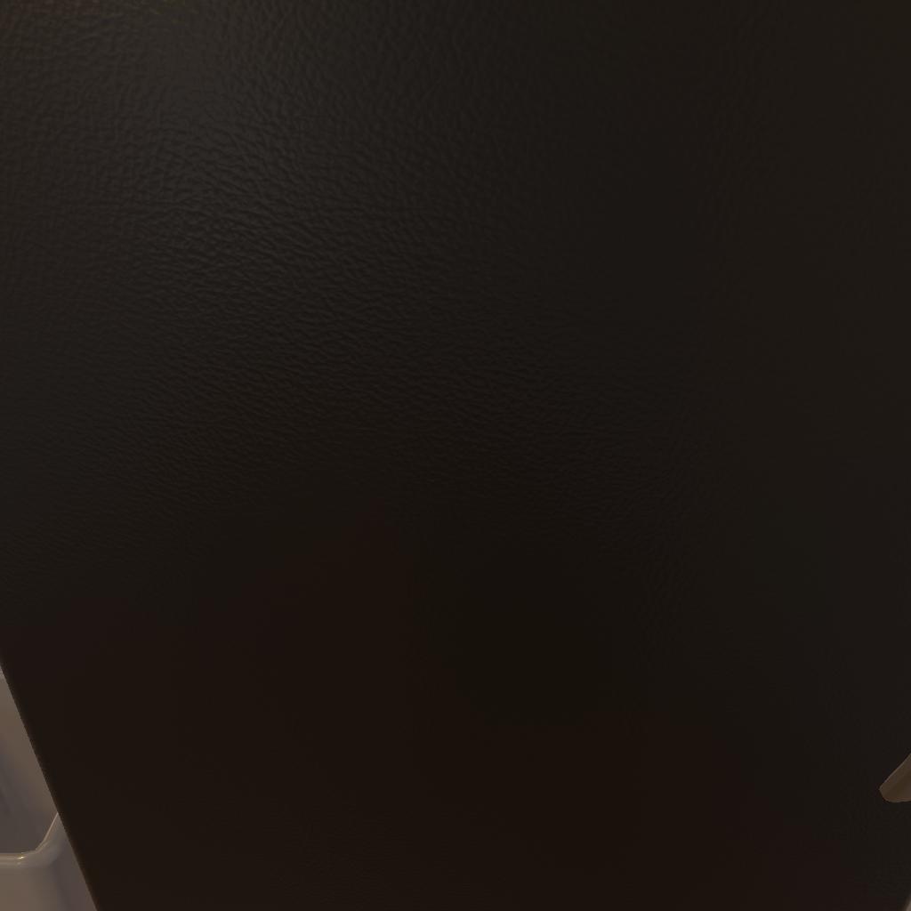
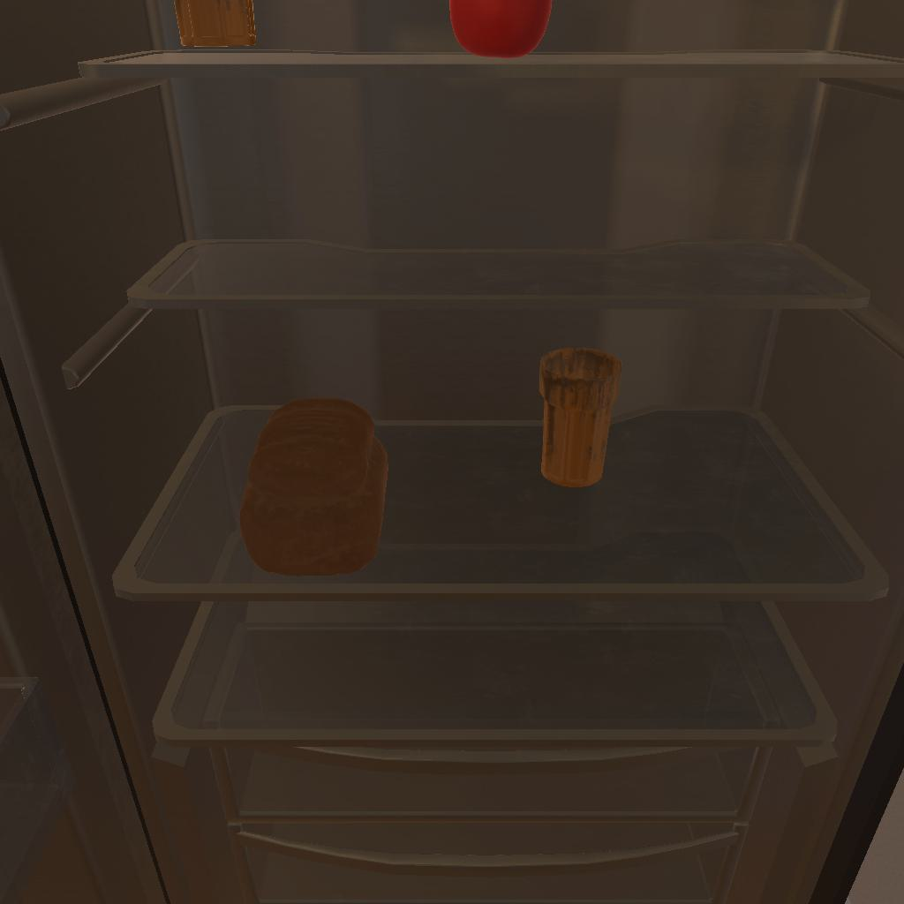
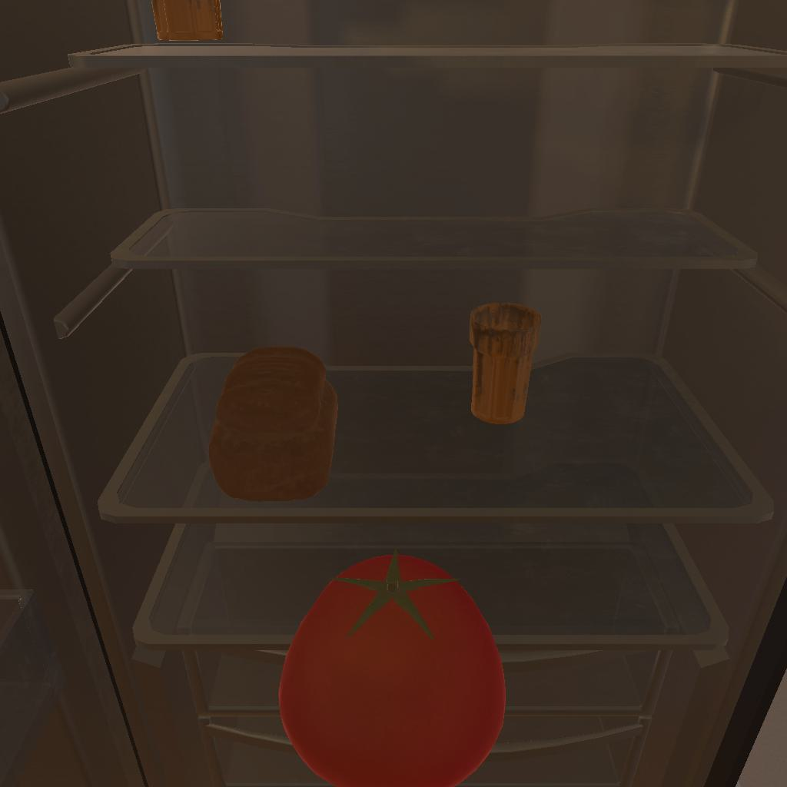

---------------------------------------------------------task: 13---------------------------------------------------------
--------------------------------------------------------------------------------------------------------------------------------------------------------------------
--------------------------------------------------------------------------------------------------------------------------------------------------------------------
Step:--------------------------------------------------------------------------6-------------------------------------------------------------------------------
----------------------------------------
VLM Prompt:
Image1:
Image2:
Image3:
**Instruction**
1. Analyze the provided images to identify all visible household objects and compare the difference between images (e.h. whether the object is opened or not and taken on hand or not), focusing on those relevant to the task description "put a clean tomato in garbagecan."
2. Use the analysis of images and the task hint "The agent must find an object of the desired type, pick it up, go to a sink or a basin, clean the object with a sink or basin, and then find the correct location to place it and put it down there. The agent does not need to use soap bottle or faucet to clean the object, and the agent just needs to do action that is "clean the object with the sink or sink basin"." to answer the question: what is the most reasonable action in the choices for the task description "put a clean tomato in garbagecan"?
3. Decide and write the answer using the template: The answer is: (i): , where i is the real number. If there is no desired object in images, search every place based on **Initial Observation** to find the object. And if no one is exactly correct, choose a similar answer.
**Initial Observation**
You are in the middle of a room. Looking quickly around you, you can see countertop (1-2), cabinet (1-11), garbagecan (1), toaster (1), sinkbasin (1), fridge (1), sink (1), microwave (1), drawer (1-3), stoveburner (1-4), coffeemachine (1), diningtable (1)
**Answer Choices**
(1): go to countertop 1
(2): go to cabinet 1
(3): go to cabinet 2
(4): go to cabinet 3
(5): go to garbagecan 1
(6): go to cabinet 4
(7): go to toaster 1
(8): go to sinkbasin 1
(9): go to sink 1
(10): go to cabinet 5
(11): go to microwave 1
(12): go to countertop 2
(13): go to cabinet 6
(14): go to cabinet 7
(15): go to drawer 1
(16): go to stoveburner 1
(17): go to stoveburner 2
(18): go to cabinet 8
(19): go to drawer 2
(20): go to stoveburner 3
(21): go to stoveburner 4
(22): go to coffeemachine 1
(23): go to cabinet 9
(24): go to cabinet 10
(25): go to cabinet 11
(26): go to diningtable 1
(27): go to drawer 3
(28): close fridge 1
(29): put tomato 1 in/on fridge 1
(30): cool tomato 1 with fridge 1
(31): examine tomato 1
(32): examine fridge 1
**Answer**
Let's think step by step by following the instructions.
----------------------------------------
----------------------------------------
Original Response:
Image Analysis:
- Image1: It is too dark to identify any objects, so we can't confirm the presence of a tomato or garbagecan here.
- Image2: Inside a fridge with a loaf of bread, a wooden object (possibly a cylinder), and a red object on the top shelf that resembles a tomato.
- Image3: The same fridge from Image2, but with the red object (tomato) now being held in the foreground, indicating it has been taken out of the fridge.
Task Analysis:
According to the task description "put a clean tomato in garbagecan," we need to find a tomato, clean it, and then dispose of it in the garbagecan. From the images and initial observation, we have found a tomato in the fridge (Image2 and Image3).
Action Analysis:
Since we already have the tomato in hand as per Image3, the next steps would be to clean it at a sink or sinkbasin and then find the garbagecan to dispose of it.
Based on the analysis:
- We do not need to search for the tomato as we already have it in hand.
- The next most reasonable action would be to clean the tomato, but none of the answer choices provide an option to clean the tomato.
- The step after cleaning would be to dispose of the tomato in the garbagecan, and there is an option to go to the garbagecan.
The answer is: (5): go to garbagecan 1
----------------------------------------
----------------------------------------
>>> Refine Original VLM Response and Get Pure Action: go to garbagecan 1
----------------------------------------
-----------------------------------------------------------------
Running time: 48.188228130340576 seconds
Total Money: 7.152230000000007
-----------------------------------------------------------------
-----------------------------------------------------------------
Text Observation:You arrive at loc 4. On the garbagecan 1, you see a faucet 1.
-----------------------------------------------------------------
UNSUCCEED